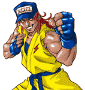
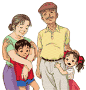
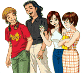
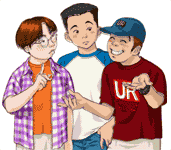

●通行人キャラクター●
クリックすると大きな画像が見れます
ぶらりドロボーネコ
プレイヤーの持っているアイテムを
うばってしまう憎いネコ。
逆にアイテムを落としてくれる
ときもある。

雷（いかづち）のショウ
自称・伝説のストリートカラテカ。
いきなりプレイヤーに勝負を挑んでくる。
負けるとダメージを受けるが、
勝つと女のコにいいウワサが流れる。

道路工事バイト依頼人
本郷深雪、神崎紅四、本郷正宗、神崎彩乃
本郷夫妻と孫の神埼兄妹。
道路工事のバイトを依頼してくる。
引きうければ５０００円もらえるが
体力と容姿が減る。
ムフフンバイト依頼人
八本木めろん
色っぽいおねえさま。
ナゾのムフフンバイトを依頼してくる。
引きうければ１００００円もらえるが
女のコに悪いウワサが流れるので注意。

さわやか通行人
山田米治、田中宏、寺嶋ユカ、白石琴音
パンダ高校の生徒たち。
いつもだれかのウワサをしているので
かれらの話を聞けば、ゲームの
ヒントになるかも？

情けない通行人
込山勉、坂東章平、高橋克則
パンダ高校の生徒たち。
さわやか通行人と同じく、
かれらからも情報が聞ける。
ハドソンの開発スタッフがモデル…。
●キャラクターデザイン 柴田からのコメント●
３回目にして、とうとう通行人の登場です。
通行人に関しては絵的な注文があまりなかったので、
肩の力を抜いて描けました。
「ぶらりドロボーネコ」はプロトの時に描いたもので、
そのまま製品版での登場となりました。
「雷のショウ」のキャラクター原案は、
格闘ゲーム好きのハドソン社員、蒲原正裕氏のラフを元にしてます。
その節はどうもありがとう！
「道路工事バイト依頼人」の本郷夫妻と神埼兄妹は
プロト版のとき、別々に登場していたものを、
通行人の役割簡素化のため統合して祖父母と孫になりました。
「ムフフンバイト依頼人」の八本木めろんですが、
質問コーナーにも問い合わせがきていましたね。
地味に人気があるのでしょうか？
個人的には、バイトを断ったときの
「いくじなし！」というセリフが好きです。
「さわやか通行人」の一番左の米治君が着ているＴシャツは
メッセージ担当の高橋克則氏の趣味です。
ちょっと小さくて分かりにくいと思いますが。
「情けない通行人」、スミマセン、内輪受けで。
似てないなどの苦情は一切受けかねます。あしからず。
通行人の一人一人まで名前が決まっているのは、
企画の両名のこだわりです。
私にとっても、メインキャラクターに負けないくらい
愛着のあるキャラクター達です。
ギャラリーにもどる
ゲッターラブ!!トップページへもどる
ゲームナビへもどる

{kind=link}
{kind=link}
{kind=link}
{kind=link}
{kind=link}
{kind=link}